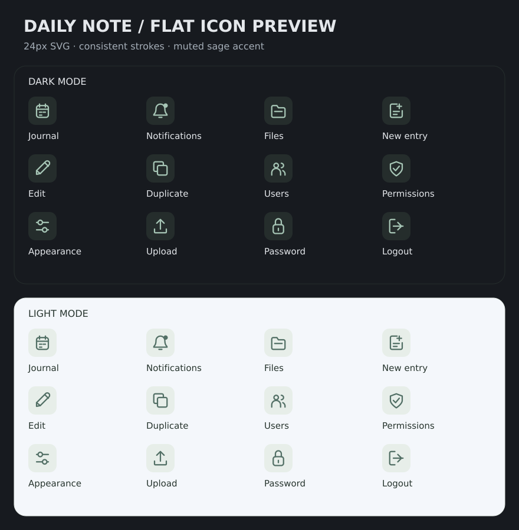

입체 이모지를 단순한 SVG 아이콘으로 바꾸는 시안입니다. 아직 실제 화면의 아이콘은 변경하지 않았습니다.

위에서부터 업무일지 · 알림 · 파일 · 새 일지 / 수정 · 복제 · 사용자 · 권한 / 화면 설정 · 업로드 · 비밀번호 · 로그아웃 순서입니다.
아이콘 옆에는 한글 버튼 이름을 함께 표시합니다. 모바일에서는 20~24px 아이콘과 44px 이상의 터치 영역을 사용합니다.